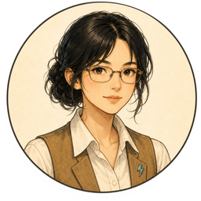
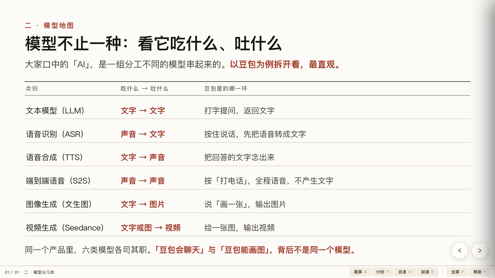
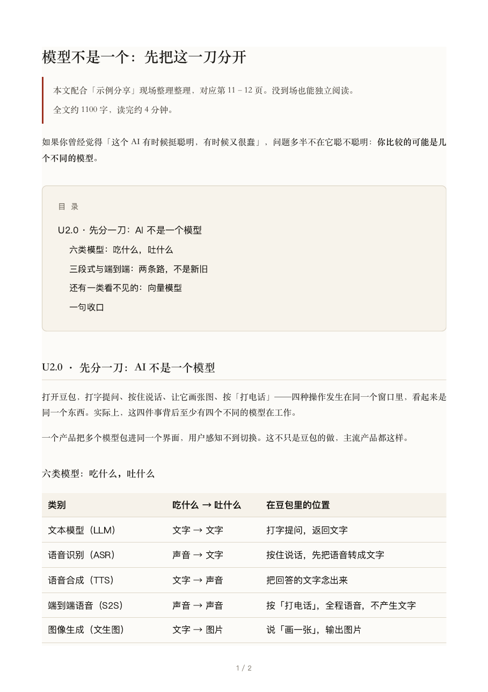
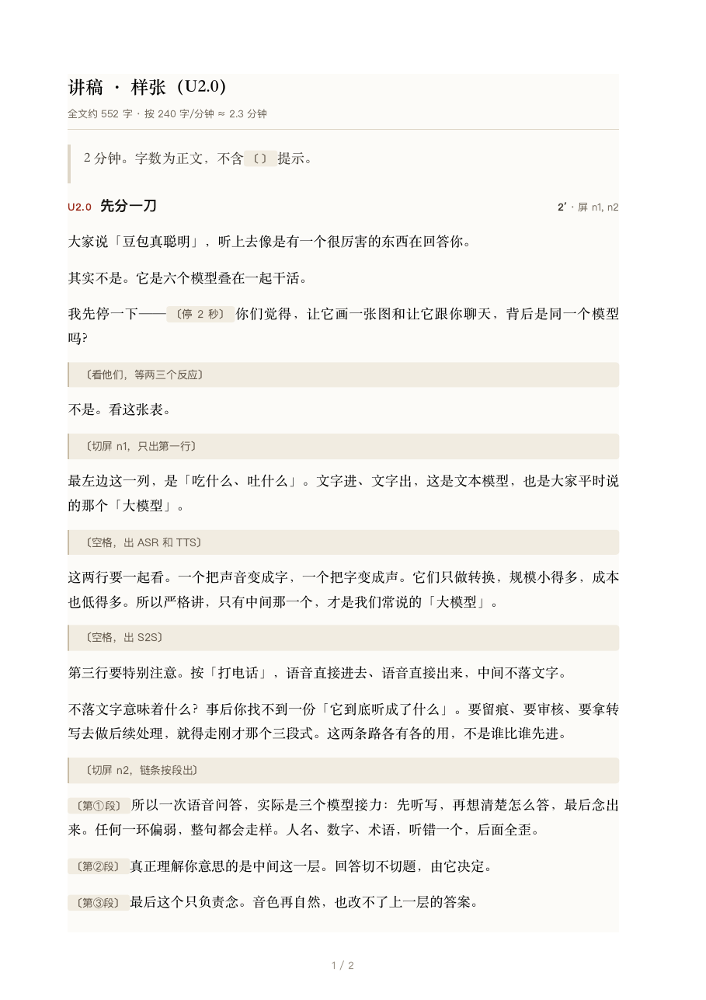

晶雕细琢从复杂中找关键，把问题讲清楚同一份东西，讲的时候要能一屏一屏出，听完要能带走一份读得懂的，讲的人自己还要有一份只给自己看的。两套 skill，一条流水线：内容只写一遍，三份各自成形，再用机械对账确认它们说的是同一件事。
把 .deck.md 渲染成单文件 HTML 演示页。
S 备注 · R 阅读模式把同一议题写成材料 + slides + 讲稿，再对账。
示例主题是「模型分几类」，一份 90 分钟分享里的两屏。slides、材料、讲稿用的是同一份内容。
想看公式、数据图、可拖参数怎么写：九屏样张。同一套语法、同一份构建脚本，只是内容换成了统计课。



| 产物 | 给谁 | 承担什么 | 不该放什么 |
|---|---|---|---|
| slides | 台下的人 | 一屏一个判断，字少、看得清 | 整段论述、参考文献 |
| 材料 | 带走的人 | 能独立读懂，有细节和出处 | 口播语气、现场指令 |
| 讲稿 | 只有讲者 | 口播原句、时间、哪里停 | 长篇背景（那是材料的事） |
# slides python3 lecture-slides/scripts/build.py talk.deck.md -o talk.html python3 lecture-slides/scripts/audit.py talk.html # 材料与讲稿 python3 lecture-pack/scripts/handout.py handout.md -o handout.html --title "示例分享" python3 lecture-pack/scripts/script.py script.md -o script.html # 对账：单元、顺序、数字是否三份一致 python3 lecture-pack/scripts/crosscheck.py content-map.md handout.md script.md talk.deck.md
只有 Python 3 标准库。两个目录必须并排放在同一个父目录下——lecture-pack 要读 ../lecture-slides/assets/tokens.css 取配色表。
git clone https://github.com/crystalyj37/jing-lecture-skills.git cp -R jing-lecture-skills/lecture-slides jing-lecture-skills/lecture-pack ~/.workbuddy/skills/